| 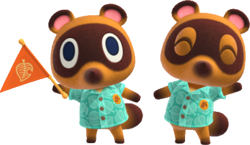 |
Brothers and inseparable, Tommy and Timmy Nook are taking care of the Deserted Island Gateway Package (DIGP). First characters introduced by the game, they help you with the first steps of the game : chosing your island and creating your own character. They help you through the beginig of the game and, once you have built it, take care of the Nook's Cranny, the main shop of your island. |
| Timmy and Tommy |
 |
Uncle of Tommy and Timmy, Tom Nook is the creator and manager of the DIGP. Encountered once you landed on your island, this character will immediatly talk to you about financial fees. As he is the one taking care of all infrastructures of the town, he will give you most of the tasks you have to accomplish. He will also be in charge of your house improvement and the debts attached to it. |
| Tom Nook |
| 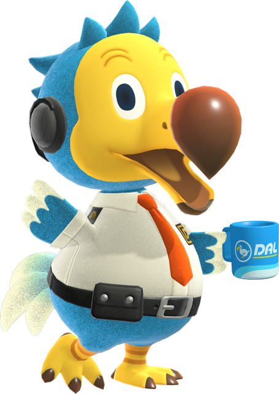 |
Assistant of the Dodo Airlines, Orville is the one to talk to for every interaction with the outside of your island. It does mean that he is here for whenever you want to explore a mystery island, go to a friend's island, or even invite people to visit your island. He can also take you to Harvey's island or other islands linked to events. |
| Orville |
| 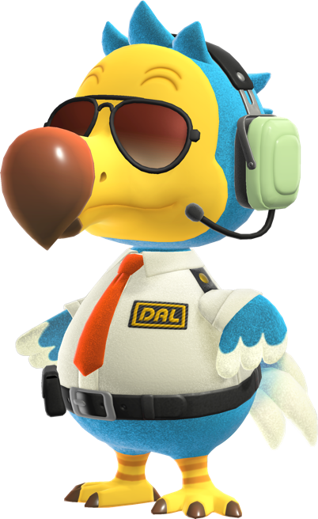 |
Pilot of the Dodo Airlines, Wilbur is the one that takes you in charge when you are on an island without airport. He will have a lots of jobs there. The first one is taking you back to your island whenever you want. He can also sell you items if yours broke. He can take care of shiping any of your items to your home or buy items from you. As his job is taking care of you too, if you pass out from an insect bite on an island, he willl take care of you until you wake up. |
| Wilbur |
 |
Wise and entomophobic museum curator, Blathers will take care of your island museum. He will expose each and every donation you make to the museum, including fossils, fishes, art pieces, and, even if he fears them, insects. He is also in charge of the museum day event. |
| Blathers |
| 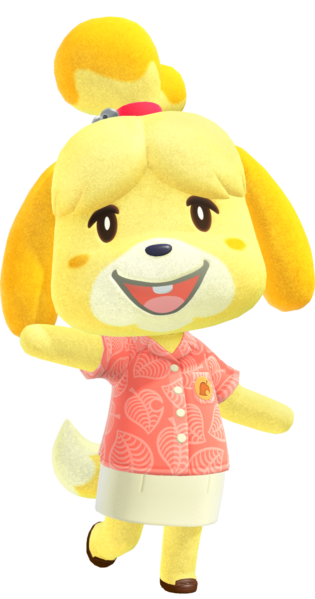 |
Happy and energic town assistant, Isabelle will assist Tom Nook in managing the island. She will be in charge of the image of the island and the relations between the inhabitants. She can tell you the actual reputation of your island, or change the island's flag and anthem. She hates conflicts but is in charge of any problem within inhabitants. She can help you change some of their features. |
| Isabelle |
| 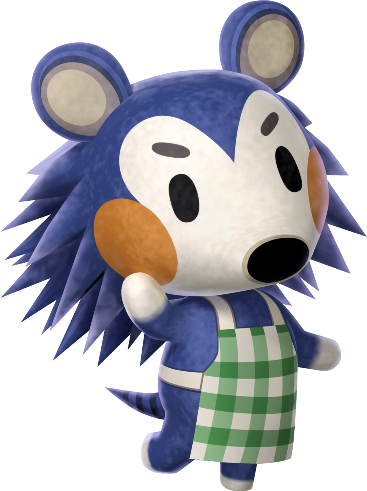 |
First of the Able sisters, Mable is the manager of the Able Sisters shop. Specialized in clothings, Mable will be the seller of the shop. She will start by appearing regularely on the island's square after you built the Nook's Cranny, then after you bought enough clothes from her she will ask you to place her own shop. Extrovert, she will always be here if her sister feels uncomfortable. |
| Mable |
| 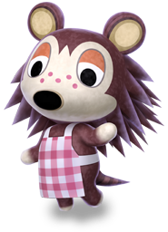 |
Second of the Able sisters and the oldest, Sable is an introvert fashion designer. Very timid, you will need to talk to her for several days before she talks back to you, and gives you some cloth designs as presents. By talking to her you will end discovering that her and her sisters did not have an easy life but that she was the one holding the family together. |
| Sable |
 |
World famous artist, K.K. Slider is a guitarist and a singer that will act as the final goal of the game's quest. You will find him on your island's square each saturday to play music. If you talk to him between 6pm and 12am, you will be able to ask a song to him, either giving him a precise name, or asking for a theme. If a precise song doesn't exist, he will play an "improvised song" from a special list. The first song played by him and not improvised will be offered to you as a present. |
| K.K. Slider |
| 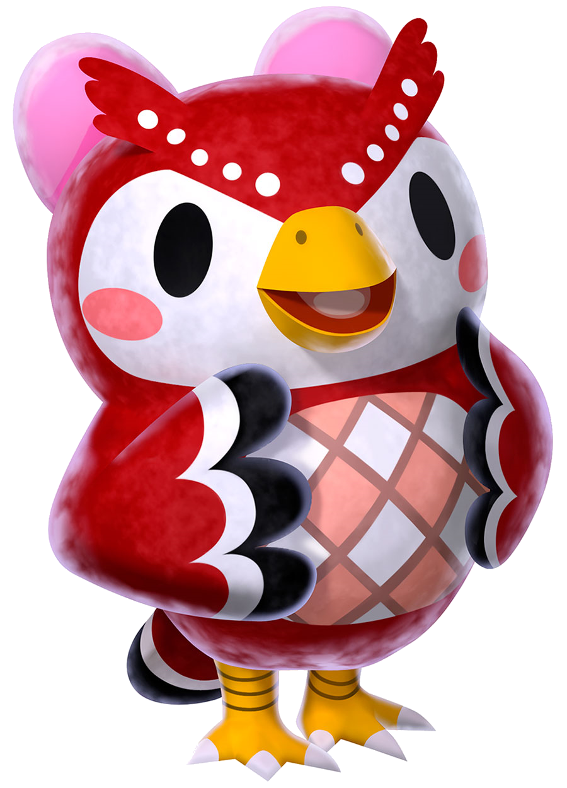 |
Young sister of Blathers, Celeste is to astronomy what her brother is to his disciplines. Randomly encountered on your island, she will always give you a special craft that uses star fragments. She also is the only character explaining to you how to interact with shooting stars. |
| Celeste |
 |
Clumsy sailor stranded on the shore, Gulliver can be randomly encountered passed out on your island's beach. Talk to him a few time and he will wake up, and try to contact his crew. As his responder always has a problem, he will ask you to find it's circuits. Dig them up from the beach and he will reward you the next day by sending you a letter containing an item you cannot obtain otherwise. |
| Gulliver |
| 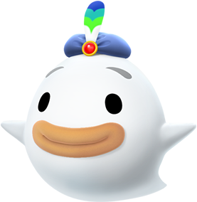 |
Fearful but kind ghost, Wisp can be randomely encountered at night. Talk to him and, scared, he will loose five spirits. Catch them all and he will reward you with either an item you don't possess or, as he says, an expensive item. But as he says himself, he does not seam to understand the concept of value and will often give you cheap items when you ask for expensive ones. |
| Wisp |
| 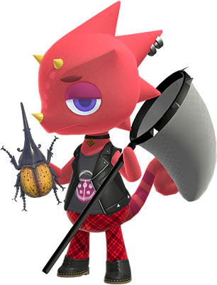 |
Passionate and enthousiast bug collectionner, Flick can be randomly encountered on your island. He will show his passion for insects by buying them to you at 150% of their normal prize. If you give him 3 insects of the same specie, he will proceed to send you a sculpture of said insect. |
| Flick |
 |
Proud and expert fisherman, C.J. can be randomely encountered on your island. He will chalenge you to catch some kinds of fishes before opening to other interactions. Then he will buy any fish for 150% of their normal prize and propose you to create you a sculpture of a fish for 3 fishes of this specie. |
| C.J. |
 |
The young turnip seller, Daisy Mae help the work of her mother. As turnips work as the stock market of animal crossing, she is an important character to earn bells in the game. She can be encountered every sunday morning on your island and will sell turnips at a random price. |
| Daisy Mae |
| 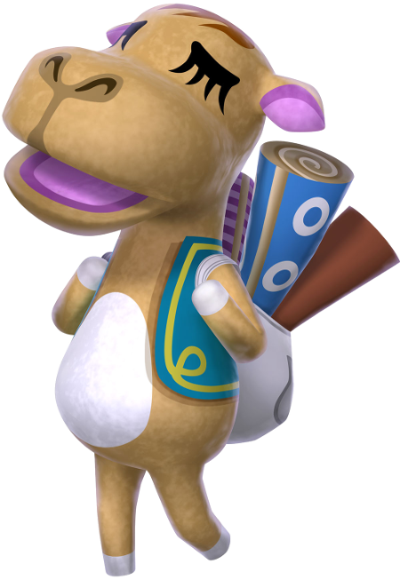 |
Calm carpet seller from a far country, Sahara can be randomly encountered on your island. This character will sell you random carpets of three sizes. The size determines the price of buying it and the number of coupons earned. When you have 5 coupons, she can exchange them to you for a secret wall or floor. |
| Saharah |
| 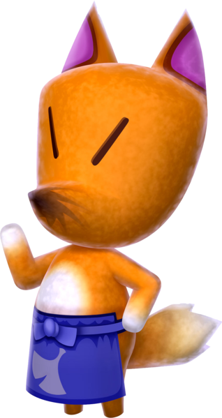 |
Strange art seller working as a black marketeer, Redd is one of the most mysterious characters. First encounterd on your island announced by Isabelle, he will sell you an art piece for a really cheap price. After that he will appear randomly on the secret beach (the one in the north of the island). There you can buy him some normal items or art pieces. He will present four at the same price, but they can be original or counterfeits, so look carefully. |
| Redd |
| 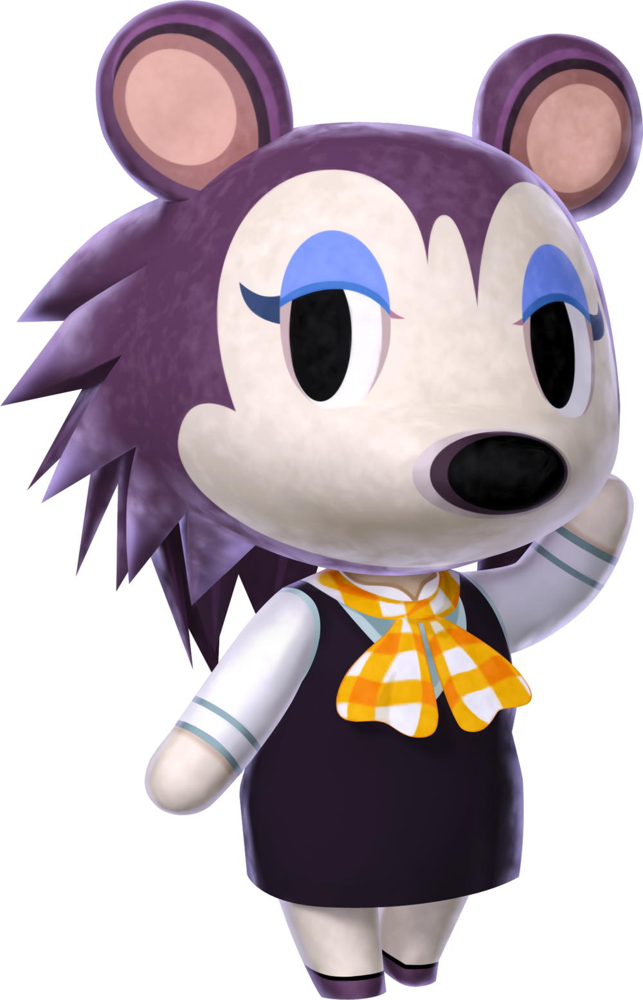 |
World famous fashion designer, Labelle -from her real name Label- is the last and youngest Able Sister. Working on her own she does not appear in the shop but randomly on your island's square. She will give you a cloth and will ask to dress yourself on a precise style. If you do her chalenge, she will reward you with a special cloth of her own brand. This item will now be unlocked in the Able Sisters shop. |
| Label (a.k.a. Labelle) |
| 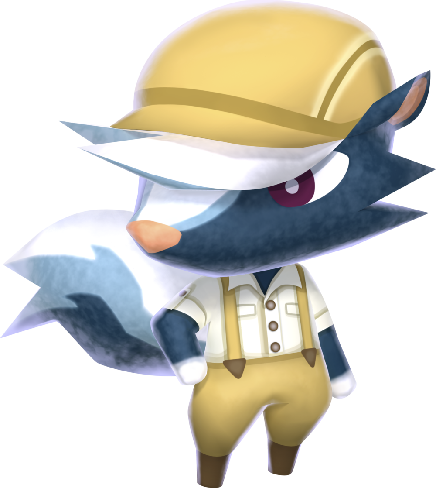 |
Specialized in leather, Kicks can be randomly encountered on the island's square. He will sell you shoes, socks, and is also the only one who can sell you backpacks. |
| Kicks |
| 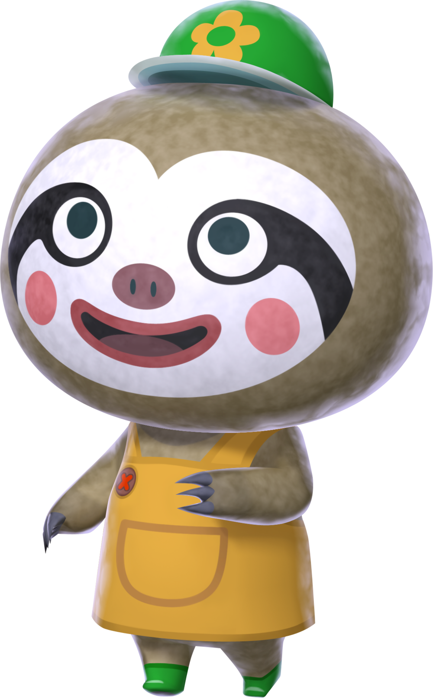 |
Friendly to plants and nature, Leif is a botanist that can be randomly encountered on the island's square. He will sell you seeds from flowers that you cannot find on your island, but also tree sprouts and most importantly bushes. |
| Leif |
| 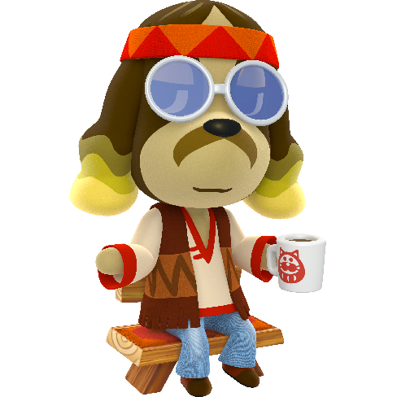 |
Hippy photographer owning his own island, Harvey can, at first be randomly encounter on your island. He will tell you to talk about "Harvey's island" to Orville. Once you've done this, Wilbur will take you to the island Harvey call Photopia. On it is a single house where he gives you every tool to do photoshoots, including giving you infinite quantities of the items you have in your catalogue and allowing you to place your own villagers. |
| Hervey |
 |
Gyroïd worker of your island, Lloyd has the job to supervize each building of the island. When you start a construction project, he will appear near the construction site. You will have to give him the bells allowing the construction to start. Your other citizen can help the construction by giving really small amounts of bell. You'll still have to do most of the donation and give the last bell. |
| Lloid |
| 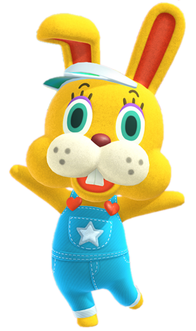 |
Mysterious and "not a costume at all" character, Zipper T. Bunny will appear on your island in april transforming it's whole ecosystem with eggs... too much chocolate eggs... everywhere... He will first appear the 1st april to start the event and set chalenges for you. Then he will come back the 12th april to end the event by giving you a lot of crafs. |
| Zipper T. Bunny |
| 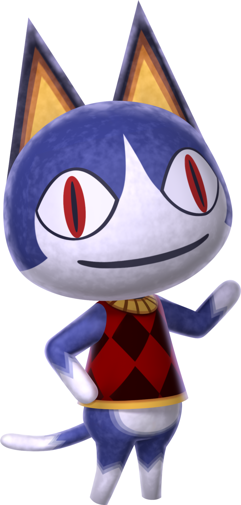 |
Acting as a reward for the may day event, Rover is a cat that appeared in previous games of the franchise. This time, Rover awaits you at the end of the maze set by Tom Nook, giving you a travel case as reward of finding him. |
| Rover |
 |
Happy wife who likes to react her wedding, Reese will appear on Photopia in June, the month of marriages. Each day, you can go see Harvey that will send you to a special room where Reese and her husband are waiting. She will ask you to take a photograph of them. Follow her instruction and she will reward you with special furnitures and a number of heart cristals depending of how well you did. |
| Reese |
| 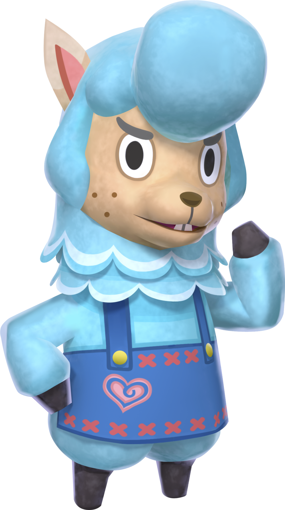 |
Loving husband who likes to react his wedding, Cyrus will appear with Reese on Photopia In June. His role is different as, instead of asking you anything, he will sell you special wedding furnitures in exchange of the heart cristals you earned from her wife. |
| Cyrus |